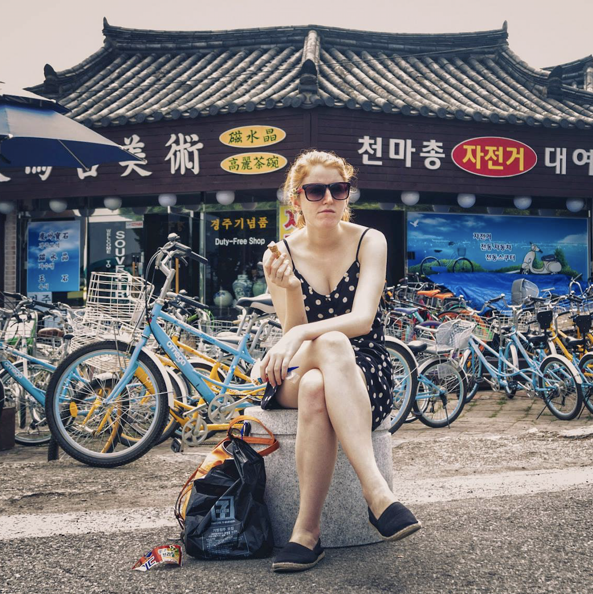

I'm a Los Angeles-based web developer specializing in HTML, CSS, JavaScript, and soon to be more. When I’m not spending my time coding, I enjoy playing pool, drinking beer, and reading weird fiction.
I lived in Japan and Korea for over seven years and speak both languages fluently, and my most recent passion project is Russian. I’m always a month behind on my Economist and Scientific American subscriptions, but mindfulness and yoga have taught me how to forgive myself.
